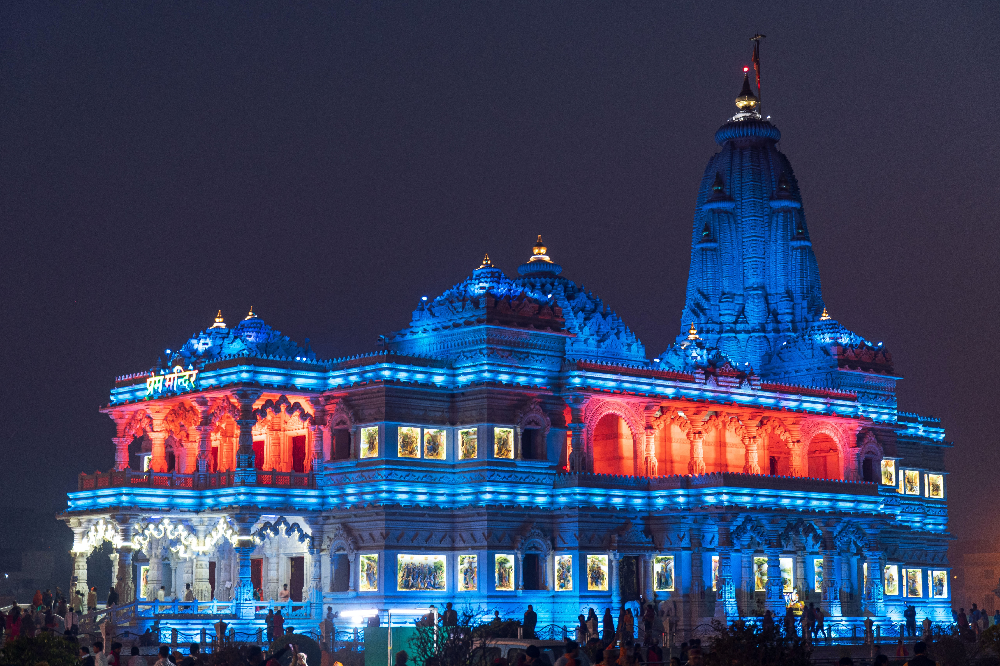
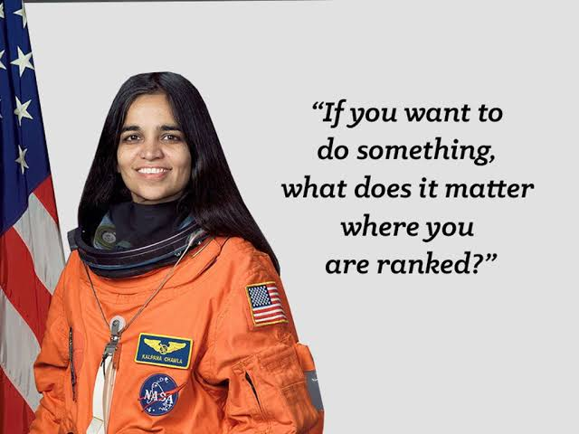
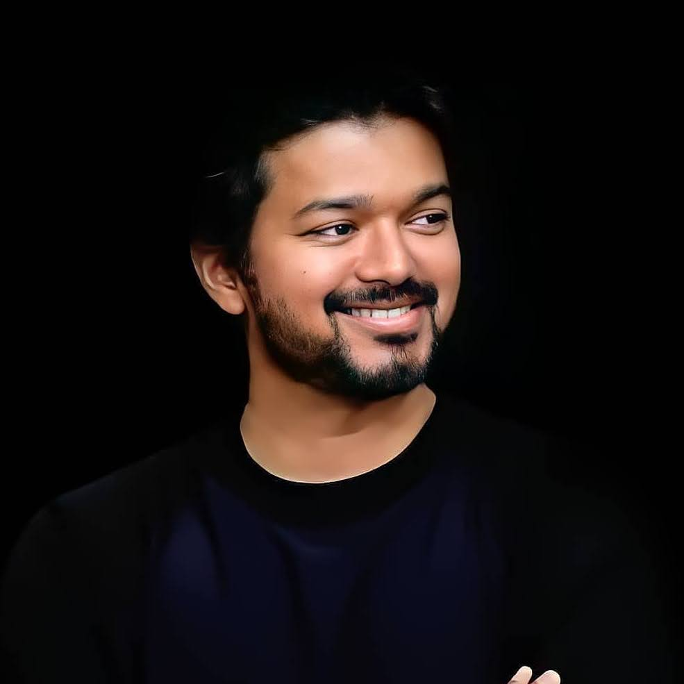
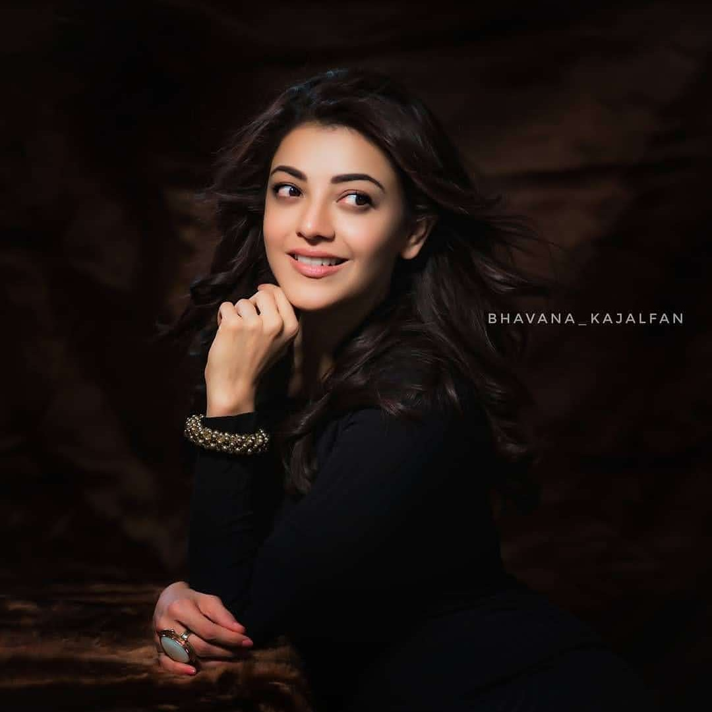

FAVORITE PLACE
Vrindavan is a holy town in Uttar Pradesh,northern India.The Hindu deity Krishna is said to have spent his childhood here.It’s home to temples,many dedicated to Krishna and his lover,the deity Radha.At Banke Bihari Temple,the curtain in front of Krishna’s statue is opened and closed every few minutes. At Radha Raman Temple, a gold plate beside Krishna signifies Radha.Prem Mandir is a huge white marble temple.This is the place where Lord Krishna is believed to have spent his childhood. The name of Vrindavan comes from words 'vrinda', which means basil, and 'van' meaning forest.
FAVORITE FOOD

Biryani is a mixed rice dish originating among South Asia. It is made with Indian spices, vegetables, rice, and usually some type of meat, or in some cases without any meat, and sometimes, in addition, eggs and potatoes.One serving of chicken biryani contains protein, carbohydrates as well as fats.Protein comes from chicken meat and cashew nut, carbohydrate comes from the rice and the fat from the oil used.
FAVORITE HERO

Cricket is very popular in India. The team players have many fans across the country. One of the coolest captains in the world is MS Dhoni.Mahendra Singh Dhoni is widely regarded as one of India's greatest captains. The only captain to lift all ICC trophies so far (ODI and T20 World Cup, Champions Trophy, and the Test Mace), Dhoni had made his name for being a calm presence as a leader for both, India and Chennai Super Kings.Under his formidable captaincy, the attitude of the entire cricket team transformed. He is considered to be one of the greatest cricket captains of all time in the world.MS Dhoni received Padma Bhushan, the third highest Civilian honour in India, in 2018. In the year of 2009, he received the fourth-highest civilian award in India, Padma Shri.
FAVORITE HEROINE
Kalpana Chawla became a source of inspiration for millions of girls in India by becoming the country's first female astronaut. She had a long way to go, and the entire world was waiting for the Columbia Space Shuttle to return to Earth after finishing their expedition.Kalpana Chawla strongly believed that one should always enjoy the path towards their final goal. If someone just does it for the goal without relishing the path, and it is as if the person was deceiving themselves. She had tremendous faith in her goals and was never easily discouraged. She always believed in enjoying steps towards achieving the destination.
FAVORITE ACTOR
Joseph Vijay Chandrasekhar known professionally as Vijay, is an Indian actor and singer who works predominantly in Tamil cinema.Thalapathy Vijay has topped the Ormax list of the most popular male film stars in India once again. The list consists of the top 10 male stars across various language film industries in the country.
FAVORITE ACTRESS
Kajal is an Indian actress who works predominantly in Telugu and Tamil language films. She has worked in more than 50 films and has received two South Indian International Movie Awards.Actress Kajal Aggarwal became the first South actress to get a wax statue at the prestigious Madame Tussauds museum in Singapore.